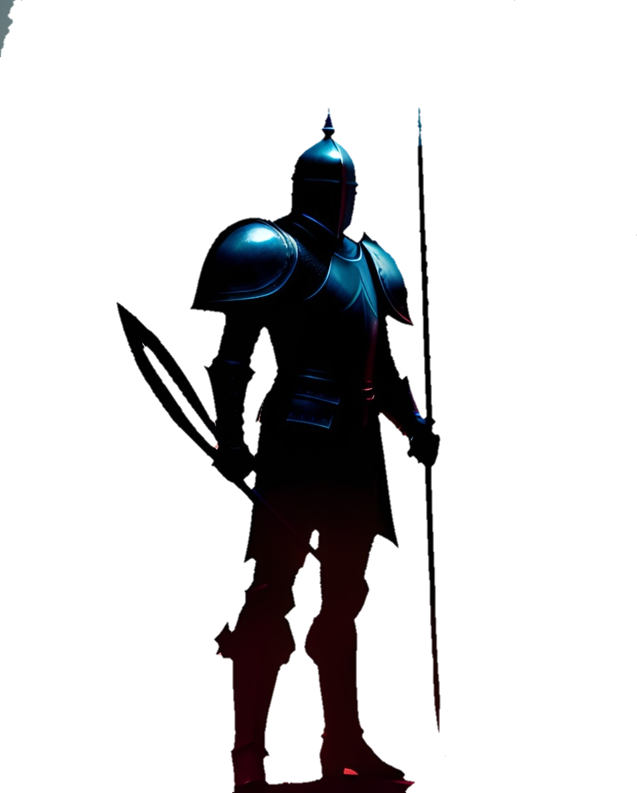

Dream Hunters
Environment
Economy
Hunters
Nightmares
Timeline
Go back
Go back
Go back
Go back
Go back
The imaginarium
A world created from people's imagination and feelings.
The inhabitants of this world are mirrored to real people, having as appearance the physical and mental characteristics of people in the real world.
Negative thoughts and feelings can be found there, they are dangerous and can distort the whole reality, also known as nightmares.
To solve this situation, the inhabitants of this land created a new type of work, hunting these nightmares. People with the ability to hunt them are called Dream Hunters.
It is an extremely dangerous job, for the successful ones they can have a luxurious life, and a lot of power in their hands. This is why many try to become Dream Hunters but few succeed.
The Environment
In addition to the nightmares present in the external environment, the terrain can be dangerous sometimes. Cliffs, toxic and acidic lakes, natural disasters, among others...
There are diverse biomes throughout this land, from flying islands, to frozen cliffs in the north.
This place tends to take on a shape similar to the Earth we know, but only the shape is similar.
Cities tend to follow a path similar to cities in our real world, such as an alternate statue of liberty, with different characteristics. But she is there.
The Civilization
Cities are not close to each other and are physically isolated in some way from the rest of the world. Abroad, it is very common to find nightmares, so people must be very careful when leaving cities.
They communicate through the Mindnet and the way that people generally use to move from one city to another is through the Neuron(A type of vehicle made in the form of a train that goes quickly from one city to another. They tend to be safe but sometimes "accidents" happen).
Some companies train their own Hunters in a school way, combining school subjects with Hunter practices.
About the Economy
(And how this society works)
The poorest people tend to consume cheap things like fast food or junk foods, in addition to living in more precarious and dangerous places.
The richest people can eat healthy food (healthy food is expensive in this world) and consume more expensive things. They also live in more luxurious and safer places compared to the poor.
The economy is driven by dreams, a kind of essence that is used as currency, energy, fuel, among others...
The Dream Hunter test
(also known as D-Day)
This is the ultimate test for someone who wants to become a Dream Hunter. Those who pass (Survive all the test) receive official identification and have access to many other things that normal people do not have.
After passing the test, individuals typically join some organization in that field. It is very difficult to complete work alone, they usually form small groups if they do not enter any company.
There are several Dream Hunter organizations, some having rivalries with others and others having an affiliation with the government.
The exam takes place once a year.
Becoming Superior
Dreams are very coveted by people, because with them people can buy things or use them to become superior to others.
Becoming superior means becoming stronger, increasing your chance of survival in this world.
Dream Hunters get a fair amount of dreams, as nightmares are made of dreams.
And for these hunters, it's very important to get those dreams because they can get stronger and hunt nightmares more often and hunt the worst nightmares too.
That's the way to get strong, active, soft skills are another way to get strong, learning about nightmares, training skills, among others...
Abilities and Skills
Skills are very important for hunters, as they are dependent on them to defeat nightmares. It's very difficult to defeat one without having some kind of skill.
Skills can be enhanced using dreams,
After completing the hunter test, individuals receive a type of equipment that allows them to manage their dreams and quantify them.
Also known as dream manager, it has several models. Hunters are given one to use.
And obviously, these dream managers can be improved and customized.
Dream managers can be used by anyone, but they are expensive and are usually only used by hunters.
Nightmares
Nightmares are clusters of distorted and chaotic dreams, and are very dangerous to all beings present in Imaginarium.
They can be divided into some levels of threat and superiority.
The higher the level of the nightmare, the greater the danger and the greater the amount of dreams present in it.
- I - They do not pose a threat when alone, but they normally travel in groups and can be dangerous in groups.
- II - This level can be considered a considerable threat because alone it can cause a big mess. It tends to live in small groups.
- III - This level is considered dangerous, as in addition to being able to be present in groups of other nightmares, it is the "leader" and can also walk alone, despite being uncommon.
- V - Extremely dangerous level, its strength can easily do a lot of damage and decimate entire groups of hunters. They are usually solitary nightmares, but they can be found in some groups.
- X - Colossal danger level, alone can destroy entire cities and is hardly defeated. They are usually found in the depths.
- Ω - Cosmic level nightmares. It is practically impossible to defeat them, and they are usually sealed or removed from the location. They live exclusively in the Upperspace and most don't attack people, they just cause effects wherever they are.
Timeline
The flow of time is the same as on earth, but the calendar used is the Zero calendar.
Relics can be found all over the world, these artifacts that come from year 0 to the present time can be very useful in certain situations.
It all starts in year 0 and the older the relic, the more valuable it is.
Hunters also seek these artifacts, as they hold ancient information about the world and about nightmares.
These relics are very rare to find, being mostly found in ruins.
@morpheus
Social Rank
1 - Royals
2 - Clergy
3 - Important Hunters
4 - CEO of larges companies
5 - Weak hunters
6 - Small traders
7 - Common People


Year 0
Now
Year 100
Year 750
Year 1200
Year 1500
Year 1900
